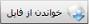
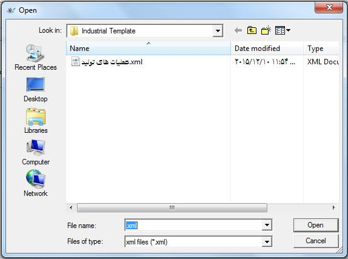

با کلیک روی منوی « صفحه تنظیمات تولید» صفحه زیر باز می شود و شما می توانید در صورت نیاز تنظیمات پیش فرض را تغییر دهید.

همان طور که مشاهده می کنید این قسمت از سه تب اطلاعات پایه، عملیات تولید و صدور و ویرایش سند تشکیل شده که با ورود به هر کدام می توانید تنظیمات پیش فرض را با توضیحات داده شده به نسبت نیاز خود تغییر دهید.
از تب اطلاعات پایه که در شکل بالا مشاهده می کنید می توانید اطلاعات پایه تولید همچون عملیات تولید تخصیص مبناها را به صورت آماده از فایل xml خواندن نمایید. برای این کار روی  گزینه کلیک کنید تا پنجره زیر نمایش داده شود:

فایل عملیات عمومی تولید را انتخاب کنید و روی گزینه مشخص شده کلیک کنید تا عملیات خوانده شده از فایل در صفحه « مدیریت عملیات تولید» قرار گیرد. همچنین می توانید
 توسط گزینه عملیات تولیدی که ایجاد کرده اید را در فایل xml ذخیره نمایید.
توسط گزینه عملیات تولیدی که ایجاد کرده اید را در فایل xml ذخیره نمایید.
در تب عملیات تولید می توانید تنظیمات مربوط به تغییرات را طبق توضیحاتی که در شکل بالا داده شده است انجام دهید.
تنظیمات مربوط به صدور و ویرایش سند تولید را می توانید از این قسمت انجام دهید. توضیحات مربوط به هر قسمت کافی می باشد و شما می توانید با توجه به آن ها نیاز خود را رفع نمایید.